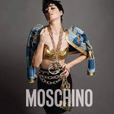
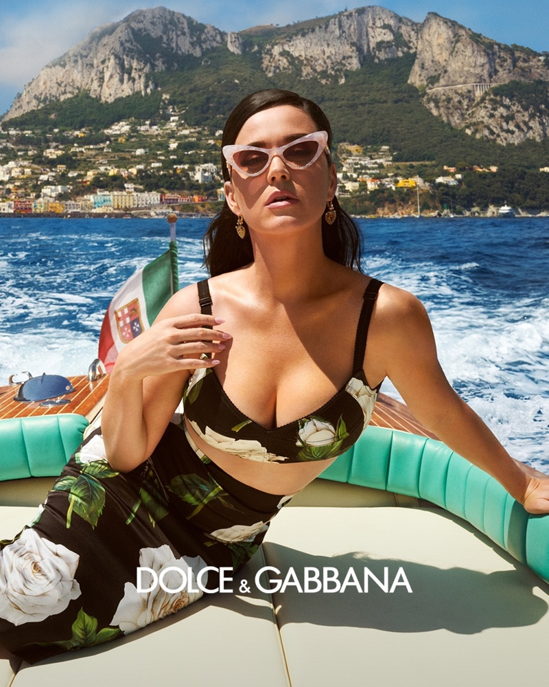
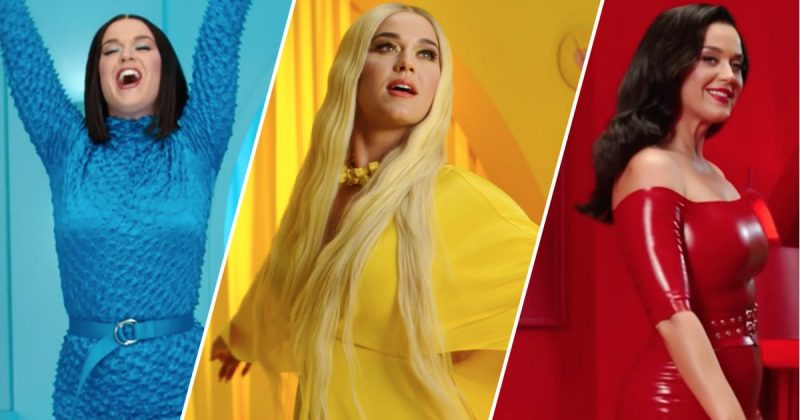

Campanhas publicitárias

Moschino
Desde que Jeremy Scott apresentou sua primeira coleção para Moschino, em fevereiro do ano passado, Katy Perry raramente fez uma aparição pública usando qualquer outro designer. De passeios do dia a dia até grandes eventos, como Superbowl e Met Gala, Scott e Kate têm colaborado inúmeras vezes, exemplificando o melhor de uma relação entre designer e musa.
Então, não é, realmente, nenhuma surpresa que Kate tenha sido escolhida para estrelar a campanha publicitária de inverno 2015 da marca, revelada, nesta quarta-feira (10.06), através de seu Instagram.

Dolce & Gabbana
Katy Perry estrela campanha publicitária do perfume Dolce & Gabbana Devotion. Foto: Dolce & Gabbana Beauty
Dolce & Gabbana , a grife italiana sinônimo de opulência, revelou sua campanha publicitária do perfume Devotion. A enfeitar esta tela aromática está ninguém menos que a sensação pop Katy Perry . Imagine-a flutuando em um barco em Capri, Itália.

Spotify
Katy Perry é uma das artistas mais ouvidas do Spotify – recentemente, o “Smile” conseguiu somar 1 bilhão de streams na plataforma, fazendo com que ela tenha todos os seus álbuns acima desse número. Não é por qualquer motivo que ela é a estrela da nova campanha promocional em um vídeo do Spotify, intitulado “Music In Color”.